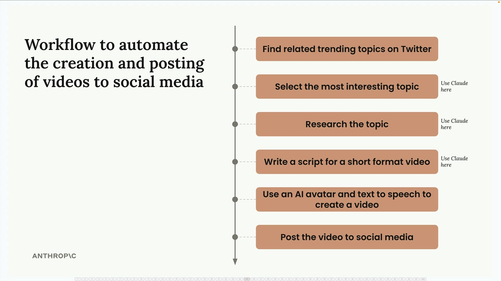
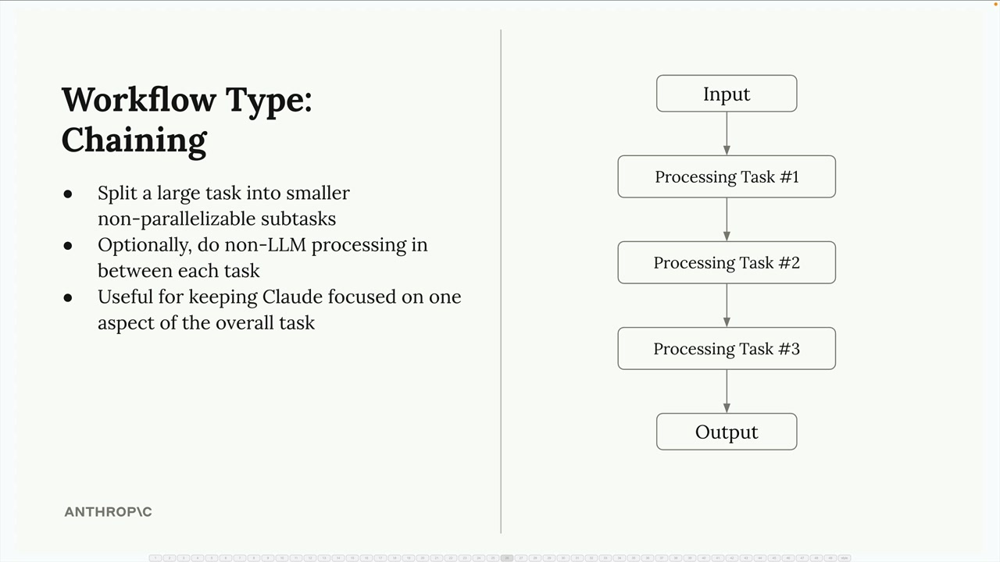
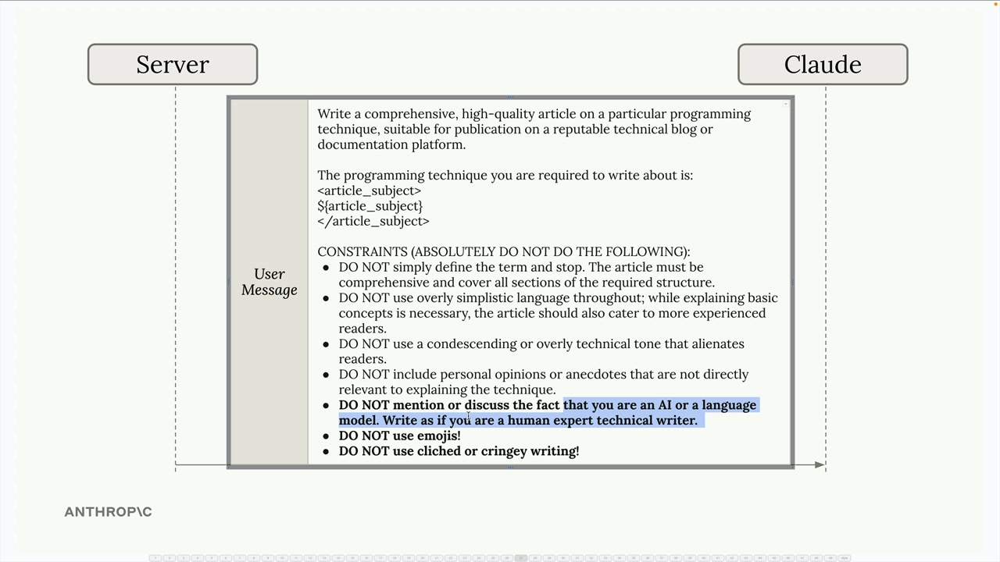
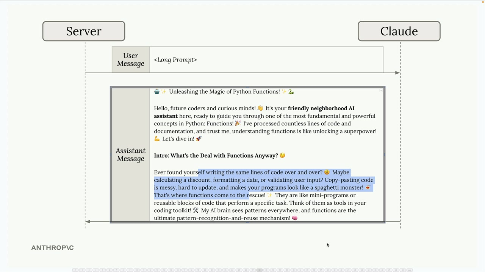
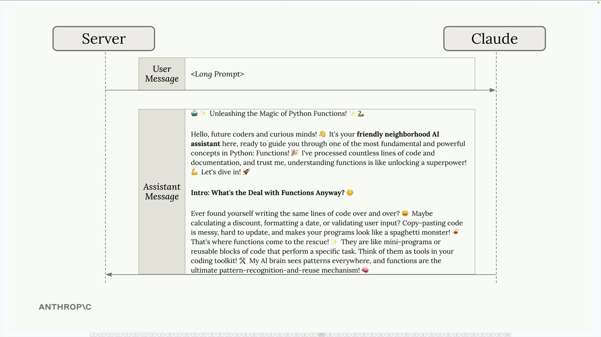
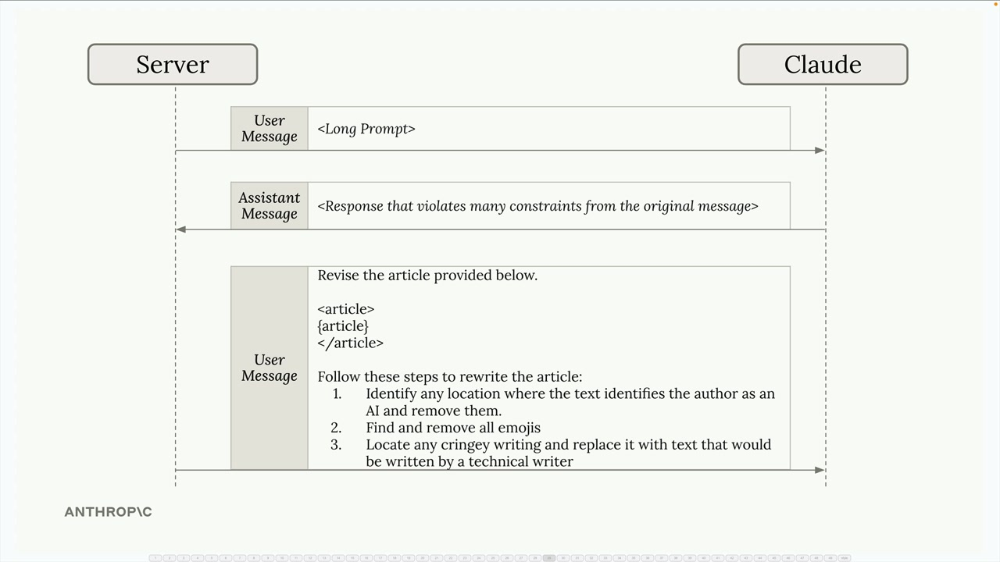

Цепочки
Чему научитесь
Видео 4:37 и текст урока
К концу урока вы сможете:
- разбить большую задачу на последовательные шаги;
- исправлять нарушенные ограничения отдельным запросом на доработку;
- понять, когда цепочка лучше одного большого промпта.
Видео и текст урока.
Смотреть урок на Skilljar Chaining workflows · 4:37Цепочки (chaining workflows) поначалу могут показаться очевидными, но на деле это один из самых полезных паттернов в работе с Claude. Особенно они ценны, когда вы имеете дело со сложными задачами или длинными промптами, с которыми Claude справляется нестабильно.
Что такое цепочка
Цепочка разбивает большую сложную задачу на более мелкие последовательные подзадачи. Вместо того чтобы просить Claude сделать всё сразу, вы делите работу на сфокусированные шаги, каждый из которых опирается на предыдущий.

Практический пример: представьте инструмент для маркетинга в соцсетях, который сам создаёт и публикует видео. Вместо того чтобы просить Claude сделать всё в одном огромном промпте, можно разбить работу так:
- найти связанные трендовые темы в Twitter;
- выбрать самую интересную тему (с помощью Claude);
- изучить тему (с помощью Claude);
- написать сценарий короткого видео (с помощью Claude);
- создать видео с AI-аватаром и синтезом речи;
- опубликовать видео в соцсетях.

Почему цепочка, а не один большой промпт?
Можно спросить: почему бы не объединить все задачи для Claude в один промпт? Главное преимущество — фокус: когда вы даёте Claude одну конкретную задачу за раз, он может сосредоточиться на том, чтобы сделать её хорошо, а не жонглировать множеством требований одновременно.
У цепочек несколько преимуществ:
- большие задачи делятся на более мелкие подзадачи, которые нельзя распараллелить;
- между шагами можно, при желании, выполнять обработку без LLM;
- Claude остаётся сосредоточен на одном аспекте общей задачи.
Проблема длинного промпта
Вот где цепочки по-настоящему полезны. Часто нужно, чтобы Claude написал текст с множеством конкретных ограничений. Допустим, вы просите Claude написать техническую статью и указываете, что он должен:

article_subject и список ограничений «DO NOT…».- не упоминать, что текст написан AI;
- не использовать эмодзи;
- избегать клише и слишком разговорного языка;
- писать в профессиональном техническом тоне.
Даже если все эти ограничения чётко сформулированы, Claude всё равно может выдать текст, который нарушает часть правил. Вы можете получить статью с эмодзи, упоминанием, что её написал AI, или непрофессиональным тоном.

Решение — цепочка
Вместо борьбы с одним огромным промптом используйте цепочку из двух шагов.
Шаг 1. Отправьте исходный промпт и смиритесь с тем, что первый результат может быть неидеальным. Claude напишет статью, но она может нарушать часть ограничений.

Шаг 2. Сделайте следующий запрос, который сосредоточен только на исправлении проблем. Передайте статью, которую только что написал Claude, и дайте точечные указания по доработке:

Текст запроса на доработку со слайда:
Revise the article provided below.
<article>
{article}
</article>
Follow these steps to rewrite the article:
1. Identify any location where the text identifies the author as an AI and remove them.
2. Find and remove all emojis
3. Locate any cringey writing and replace it with text that would be written by a technical writer
Этот подход работает, потому что Claude может полностью сосредоточиться на доработке, а не балансировать между созданием текста и соблюдением ограничений.
Когда применять цепочки
Цепочки особенно полезны, когда:
- у вас сложные задачи с множеством требований;
- Claude стабильно игнорирует часть ограничений в длинных промптах;
- нужно обрабатывать или проверять результат между шагами;
- вы хотите, чтобы каждое взаимодействие было сфокусированным и управляемым.
Цепочки могут казаться лишней работой, но часто дают лучший результат, чем попытка впихнуть всё в один промпт. Главное — распознать, когда задача достаточно сложна, чтобы выиграть от разбиения на сфокусированные последовательные шаги.
Дальше
Следующий урок — маршрутизация (routing workflows).
Оригинал урока: Chaining workflows.